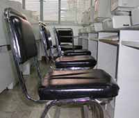

| Computer
Facilities and Operations : Updates
Migration
to Windows 2003
By: Allan U. Tee
After some product reviews and deliberations, the CFO Department
has decided to implement and use the Microsoft Windows Server
2003 for its new features, scalability and security add ons.
The Windows 2003 will replace current Windows 2000 domain
controller and Exchange 2000 Server.
The Windows Server 2003 family takes the best of Windows
2000 Server technology and makes it easier to deploy, manage,
and use. The result: a highly productive infrastructure that
helps make a network a a strategic asset in an organization.
Basically, Windows 2003 has more security features like the
IIS 6.O for Web Servers and a secure wireless LAN. It is also
compatible with existing Windows 2000 Servers.
New Features
- Active Directory Improvements
- New Group Policy Management
- Internet Information Service 6.0
- Internet Connection Firewall
- Integrated .NET Framework
- Internet Information Service 6.0
- Volume Shadow Copy Service (VSS)
- More Command-Line Management
- Secure Wireless LAN (802.1X)
Installation Phase
Our System Administrators have gone through the Windows
2003 trainings. By this term-in the process of configuring
our first Windows 2003 server.
The Windows 2003 will replace current Windows 2000 domain
controller and Exchange 2000 Server.
Things to Come
Windows 2000 servers will be upgraded to Windows 2003, priority
will be given to web servers using IIS 5.0.
[ Related Article ] : Financial
Perspective of the Balanced Scorecard (BSC)
New
Laboratory Log In Procedures
By: Irwin Jurillia
Switching of IDs at the computer laboratories became a big
concern for ITC. In order to address this problem, new log
in procedures has been introduced. A student needs to present
his ID to the Lab/Student Assistant.
After this, he will be given a tag number for his assigned
computer seat. Likewise, ID will be given back to the student
after scanning the ID on the CIS (Computer Information System).
This step will also eliminate switching of IDs.
An amount of P50 will be charged to a student for a lost
tag number.
Updated
Wireless Hot Spots:
By: Irwin Jurillia
Below is the list of locations with wireless facilities within
the University Campus.
- Velasco Bldg - all floors
- Miguel Bldg - all floors
- Z2Cafe ground floor
- Gokongwei Bldg - all floors
- SJ Bldg - all floors
- Central Plaza
- Study Area between SJ and Library
- William Hall Ground floor
- Library - all floors
- North Conservatory
- LS 2nd floor
- Marian Quadrangle
- GSB-RCBC
Computer
Donations:
By: Irwin Jurillia
For the School Year 2004-05, CFO have released old computer
equipment as donations outside the university. These are 6
computer units and 2 dot matrix printers. These units were
no longer being used as their hardware specifications were
very low and do not meet the minimum hardware requirement.
Within the school campus, 69 computer units were deployed
as donations to different offices. The donated computers came
from the computer laboratories which were upgraded with branded
computers.
Biometrics
for V311
By: Irwin Jurillia
The new V311 computer laboratory will also be installed with
a biometric door access security system. It requires an ID
card or a fingerprint with a combination of a password to
open the door. Access logs are being recorded in a server
for analysis and review purposes. Correspondingly, only authorized
staff has access rights to it. The security system will be
installed within this term. All computer laboratories being
maintained by ITC are installed with the biometric door access
security system.
New
Computer Chairs:
By: Irwin Jurillia

100 units of new computers chairs have been delivered to
replace the defective chairs in the computer laboratories.
Most of the new chairs were placed at G304a and G304b. Some
defective chairs from other computer laboratories were also
replaced.
These new chairs are made of chrome plated square tub frame.
Additional braces were welded on it to re-enforce the frame.
|